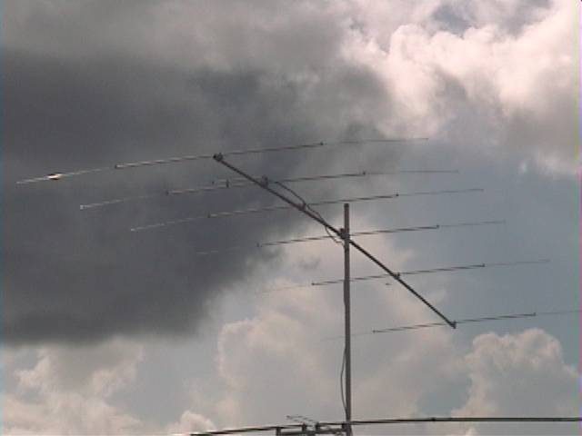
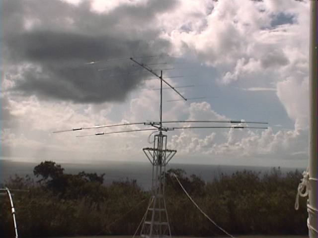
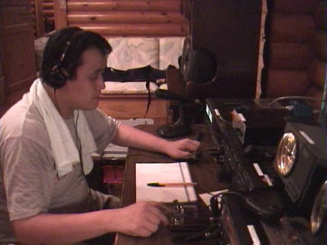

KH2K/AHφ サイパンレンタルシャック・リアルタイムレポート
■6月20日 10:17JST更新
このページは,サイパンマリアナリゾートホテル レンタルシャックから更新します。（6月21日〜23日）
今回の目的は、10mのクランクアップタワー増設工事が目的です。
また、サテライトAO-10にもQRVします。ただし、アンテナは144MHz ５エレ、430MHz 10エレ。
6月20日夜、成田から出発、21日未明にサイパン到着です。お楽しみに!
■6月21日 14:35JST更新
朝、０１：３０にサイパンへ到着。午後からアンテナを設置して、運用中。
（50MHz 6エレ、HF 2エレHB9CV）
現在、50.110MHz CWでQSO中。 ２，３エリアがオープン。
HFは後ほどQRVします。
■6月21日 17:07JST更新
現在、50.110MHz CWでQSO。 1,2,3,4,5,7,φエリアがオープン。
現在使用中のアンテナは50MHz６エレ、14/21/28MHz２エレHB9CV。
 
■6月21日 21:23JST更新

JAとのオープンは０８：３０Z頃にフェードアウトした。
６ｍの交信局数は49局＋12局。
50.115MHzで終日ビーコンを発信中。
■6月22日 21:07JST更新
昨日とは,うってかわり6mのコンディションは低調。夜になってJR6と弱いJA２が確認できたのみ。
西方向からのTVのバズもほとんど聞こえてこなかった。
今日初めて、AO-10で２局のJAとQSOに成功した。
明日も、終日50.115MHzでビーコンを発信。AO-10にQRV(Downlink 145.890MHz）予定。
6月24日 11:00JST頃まで運用予定。午後からは、3エリアのグループが到着し運用する。
■6月23日 03:45JST更新
この時間にJAがオープン。現在、JA2IGYとJA6YBRのビーコンも入感。
JA1,JA9と03:00頃から数局とQSO。
■6月24日 11:54JST QRT
（戻るはブラウザの[戻る]をクリック）